תוכן העניינים
מה יש כאן
האתר מרכז מאות מסלולי רכיבה והליכה, רובם בצפון הארץ. לכל מסלול יש קובץ GPX להורדה, תמונה של המסלול על מפה, מרחק, טיפוס וירידה, ישובים סמוכים ולעיתים גם הערות ומקומות עניין.
יש ארבעה דפים, וכל אחד מהם פתוח לשימוש חופשי:
🗺️ קטלוג מסלולים
בראש הדף נמצאים כפתורי המעבר לדפים האחרים, תיבת החיפוש והמסננים. מתחתיהם רשימת המסלולים, 30 בכל עמוד, ממוינים מהחדש לישן.
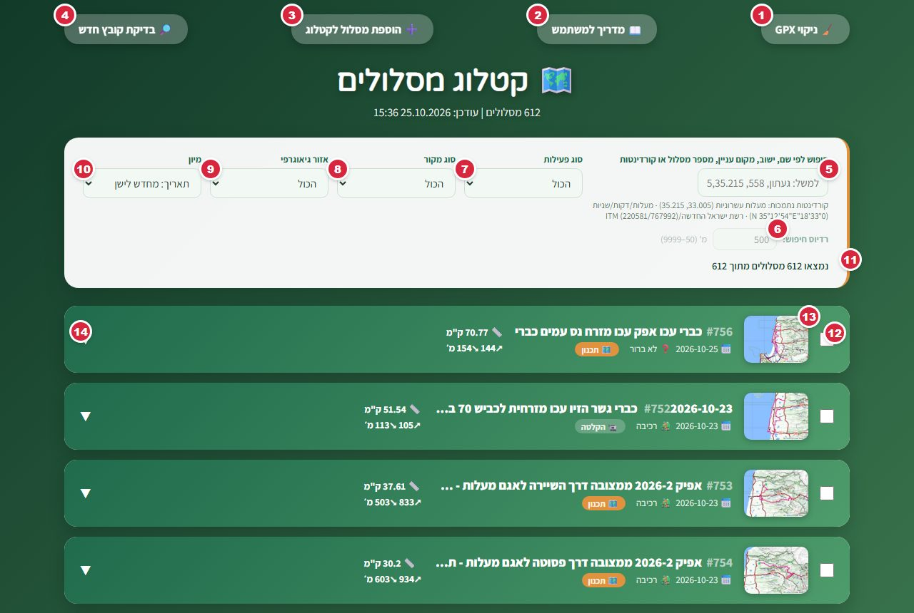
| # | כפתור / שדה | מה הוא עושה |
|---|---|---|
| 1 | 🧹 ניקוי GPX | מעבר לדף ניקוי קובץ GPX. |
| 2 | 📖 מדריך למשתמש | פותח את המדריך הזה. |
| 3 | ➕ הוספת מסלול לקטלוג | פותח את טופס הוספת מסלול, לשליחת מסלול שלכם לקטלוג. |
| 4 | 🔎 בדיקת קובץ חדש | מעבר לדף עריכת מסלול חדש, לפתיחת קובץ GPX מהמחשב. |
| 5 | תיבת החיפוש | חיפוש לפי שם מסלול, ישוב, מקום עניין, מספר מסלול או קורדינטות. התוצאות מתעדכנות תוך כדי הקלדה. ראו חיפוש, סינון ומיון. |
| 6 | רדיוס חיפוש | פעיל רק בחיפוש לפי קורדינטות: מציג מסלולים שעוברים במרחק הזה מהנקודה. בין 50 ל-9999 מטר, ברירת המחדל 500. |
| 7 | סוג פעילות | הכול / 🚶 הליכה רגלית / 🚵 רכיבת אופניים. |
| 8 | סוג מקור | 📹 הקלטה (מסלול שבוצע בפועל) או 🗺️ תכנון מסלול (מסלול שצויר מראש ולא הוקלט). |
| 9 | אזור גיאוגרפי | רמת הגולן והחרמון, בקעת הירדן, צפון, מרכז, ירושלים ומדבר יהודה, נגב וערבה. מסלול שחוצה אזורים מופיע בכל אחד מהם. |
| 10 | מיון | לפי תאריך, מרחק או שם, בשני הכיוונים. |
| 11 | מונה תוצאות | כמה מסלולים נמצאו מתוך כל הקטלוג. |
| 12 | תיבת סימון | בוחרת את המסלול להורדה, להצגה על מפה או לניקוי. ראו בחירת מסלולים. |
| 13 | תמונה ממוזערת | לחיצה מגדילה את תמונת המסלול על המפה. לחיצה נוספת סוגרת אותה. |
| 14 | חץ ▼ (וכל שורת הכותרת) | פותח וסוגר את פרטי המסלול. ראו כרטיס מסלול. |
בשורת הכותרת של כל מסלול מופיעים: מספר המסלול (#), השם, התאריך, סוג הפעילות, תגית 📹 הקלטה או 🗺️ תכנון, המרחק בק"מ והטיפוס והירידה במטרים (↗ ↘). למסלול מתוכנן בלי נתוני גובה כתוב "אין נתון (תכנון)".
מעבר בין עמודים
הקודם / הבא עוברים עמוד אחד. הכפתור הימני הקיצוני (⏭) קופץ לעמוד הראשון, והשמאלי הקיצוני (⏮) לעמוד האחרון. ב"עבור לדף" מקלידים מספר עמוד ולוחצים עבור או Enter.
🔍 חיפוש, סינון ומיון
למצוא מסלול לפי שם, ישוב או מקום
- מקלידים בתיבת החיפוש מילה, למשל
יחיעם. החיפוש בודק את שם המסלול, את הישובים הסמוכים ואת מקומות העניין. - כדי למצוא מסלולים שעוברים בכמה מקומות יחד, מפרידים בפסיק:
געתון, כברימוצא רק מסלולים שמתאימים לשתי המילים. - אפשר לצמצם עוד בעזרת סוג פעילות, סוג מקור ואזור.
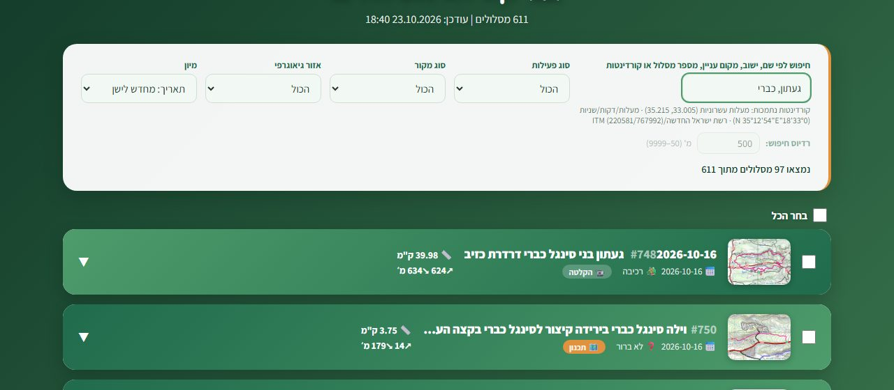
למצוא מסלול לפי מספר
מקלידים את מספר המסלול, למשל 752. המספר מופיע ליד השם, אחרי הסימן #.
למצוא מסלולים שעוברים בנקודה מסוימת
- מעתיקים קורדינטות, למשל מגוגל מפות (לחיצה ימנית על המפה ואז לחיצה על המספרים), ומדביקים בתיבת החיפוש.
- שלושה פורמטים נתמכים:
- מעלות עשרוניות:
32.963815, 35.116328 - מעלות, דקות ושניות:
33°0'18"N 35°12'54"E - רשת ישראל החדשה (ITM):
220581/767992
- מעלות עשרוניות:
- מכוונים את רדיוס החיפוש 1. יוצגו כל המסלולים שקו המסלול שלהם עובר במרחק הזה מהנקודה, גם אם הם מתחילים רחוק ממנה.
- התוצאות ממוינות מהקרוב לרחוק, ולכל מסלול מופיעה תגית 2 עם המרחק מהנקודה.
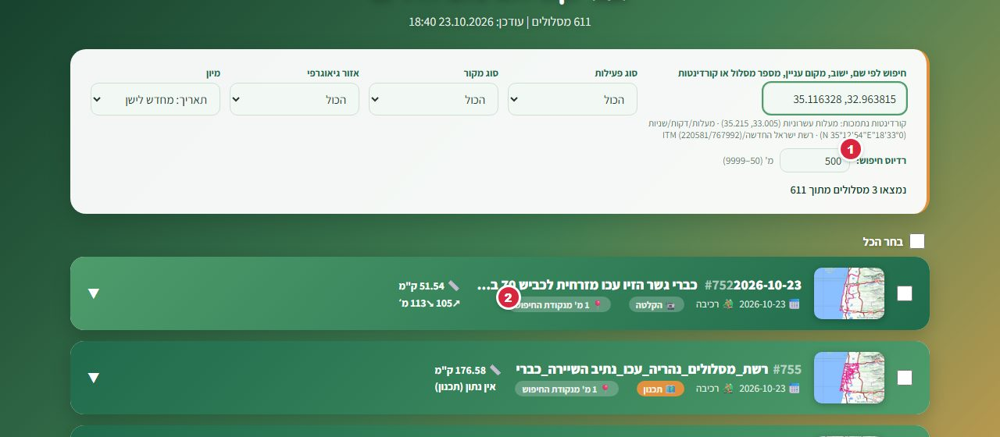
חיפושים אחרונים
לחיצה על תיבת החיפוש כשהיא ריקה פותחת רשימה של 5 החיפושים האחרונים שלכם (🕒). לחיצה על אחד מהם מריצה אותו שוב. הרשימה נשמרת בדפדפן שלכם בלבד.
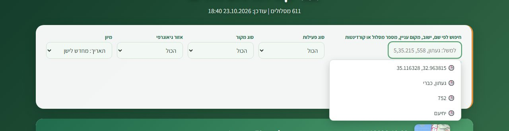
📋 כרטיס מסלול
לחיצה על שורת הכותרת של מסלול פותחת את הפרטים שלו: האזור הגיאוגרפי, הישובים הסמוכים ומספר הנקודות בקובץ. אם יש למסלול הערות, הן מופיעות כאן.
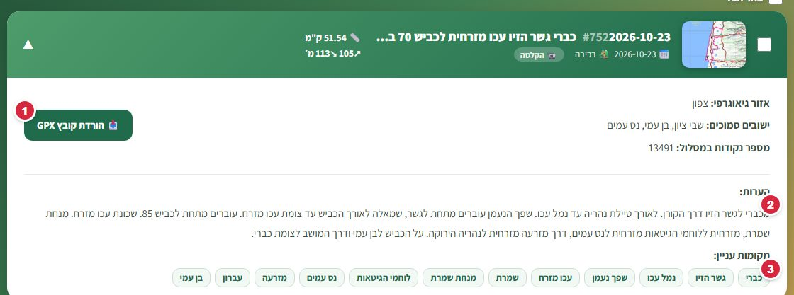
| # | כפתור / אזור | מה הוא עושה |
|---|---|---|
| 1 | 📥 הורדת קובץ GPX | מוריד את קובץ המסלול למחשב או לטלפון. אפשר לטעון אותו לאפליקציית ניווט, לשעון או למחשב רכיבה. |
| 2 | הערות | תיאור המסלול: מאיפה לאן, דרך איפה, ודברים שכדאי לדעת. |
| 3 | מקומות עניין | כל תגית היא מקום שהמסלול עובר בו. לחיצה על תגית מחפשת את כל המסלולים שעוברים באותו מקום. |
☑️ בחירת מסלולים והורדה
מסמנים את תיבת הסימון של מסלול אחד או יותר, ובתחתית המסך נפתח פס פעולות. הבחירה נשמרת גם כשמחפשים משהו אחר או עוברים עמוד, כך שאפשר לאסוף מסלולים מכמה חיפושים.
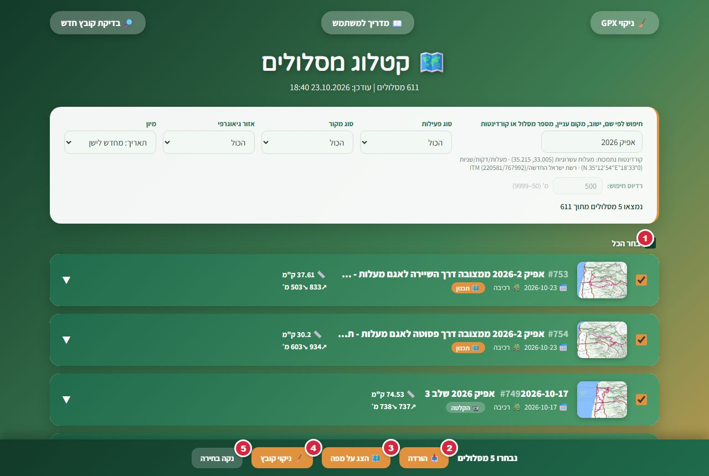
| # | כפתור | מה הוא עושה |
|---|---|---|
| 1 | בחר הכל | מופיע רק אחרי שהקלדתם משהו בתיבת החיפוש. בוחר את כל תוצאות החיפוש, גם אלה שבעמודים הבאים, במקום מה שהיה בחור קודם. הסרת הסימון מנקה את כל הבחירה. |
| 2 | 📥 הורדה | מוריד את קובצי ה-GPX של כל המסלולים שנבחרו, כל אחד כקובץ נפרד. ייתכן שהדפדפן ישאל אם לאשר הורדה של כמה קבצים. |
| 3 | 🗺️ הצג על מפה | פותח מפה במסך מלא עם כל המסלולים שנבחרו, כל אחד בצבע אחר. ראו תצוגת המפה. |
| 4 | 🧹 ניקוי קובץ | פותח את דף ניקוי GPX עם המסלול שנבחר. אם נבחרו כמה מסלולים, נפתח הראשון ברשימה. |
| 5 | נקה בחירה | מבטל את הבחירה של כל המסלולים. |
🗺️ תצוגת מסלולים על המפה
אחרי לחיצה על 🗺️ הצג על מפה נפתחת מפת טיולים במסך מלא. כל מסלול מופיע בצבע משלו: עיגול מסמן את נקודת ההתחלה ומעוין את נקודת הסיום. במסלול שמורכב מכמה קטעים נפרדים אין סימוני התחלה וסיום.
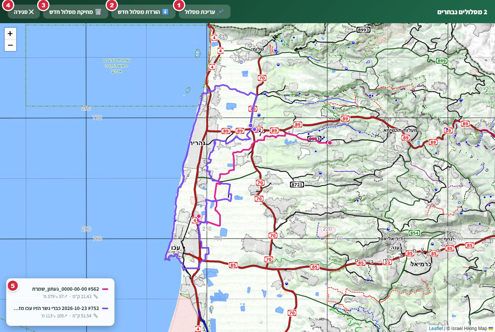
| # | כפתור | מה הוא עושה |
|---|---|---|
| 1 | 🖊️ עריכת מסלול | פותח את תפריט העריכה. ראו עריכת מסלול מתוך המפה. |
| 2 | ⬇️ הורדת מסלול חדש | מוריד את המסלול שבניתם בעריכה כקובץ מסלול_חדש.gpx, ומנקה אותו מהמפה. צריך לפחות שתי נקודות. |
| 3 | 🗑️ מחיקת מסלול חדש | מוחק את המסלול שבניתם כדי להתחיל מחדש. המסלולים המקוריים לא נפגעים. |
| 4 | ✕ סגירה | סוגר את המפה וחוזר לקטלוג. הבחירה נשמרת. |
| 5 | מקרא | שם, מרחק וגובה של כל מסלול, עם הצבע שלו. לחיצה על שם מסתירה את המסלול מהמפה, ולחיצה נוספת מחזירה אותו. |
קורדינטות של נקודה
לחיצה על כל נקודה במפה (כשלא נמצאים במצב עריכה) פותחת חלונית עם הקורדינטות שלה. 📋 העתקת קורדינטות מעתיק אותן, ואפשר להדביק אותן בתיבת החיפוש של הקטלוג או בכל אפליקציה אחרת.
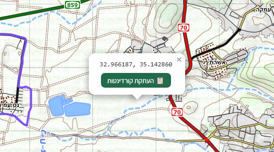
🖊️ עריכת מסלול מתוך המפה
הכפתור 🖊️ עריכת מסלול פותח תפריט. בעזרתו אפשר לבנות מסלול חדש מתוך המסלולים שעל המפה או מתוך שבילי המפה, ולהוריד אותו. המסלולים המקוריים לא משתנים.
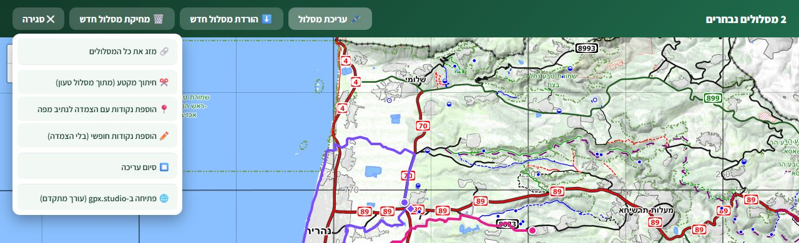
| אפשרות | מה היא עושה | |
|---|---|---|
| 🔗 | מזג את כל המסלולים | מוריד מיד קובץ אחד, מיזוג_מסלולים.gpx, שמכיל את כל המסלולים שעל המפה ברצף. |
| ✂️ | חיתוך מקטע (מתוך מסלול טעון) | בונים מסלול חדש לאורך המסלולים שעל המפה: לוחצים על נקודות על הקווים, והמסלול החדש עוקב אחרי הקו בין לחיצה ללחיצה. אפשר לעבור ממסלול למסלול בנקודות שבהן הם נפגשים. |
| 📍 | הוספת נקודות עם הצמדה לנתיב מפה | כמו חיתוך, אבל לאורך השבילים והדרכים של המפה (מתוך OpenStreetMap), גם במקומות שאף מסלול בקטלוג לא עבר בהם. צריך להתקרב (זום) לאזור לפני הבחירה. אם השטח גדול מדי תופיע הודעה. |
| ✏️ | הוספת נקודות חופשי (בלי הצמדה) | כל לחיצה מוסיפה נקודה בדיוק במקום שלחצתם, והנקודות מחוברות בקו ישר. מתאים לקטע קצר בלי שביל במפה. |
| ⏹️ | סיום עריכה | מפסיק להוסיף נקודות, אבל המסלול שבניתם נשאר על המפה, וגם UNDO והורדה עדיין עובדים. |
| 🌐 | פתיחה ב-gpx.studio (עורך מתקדם) | פותח בלשונית חדשה את כל המסלולים שנבחרו באתר gpx.studio, עורך GPX חינמי עם אפשרויות נוספות. |
פס העריכה
במצב עריכה מופיע מתחת לכותרת פס עם הכלים, והמסלול החדש מצויר בקו כתום מקווקו.
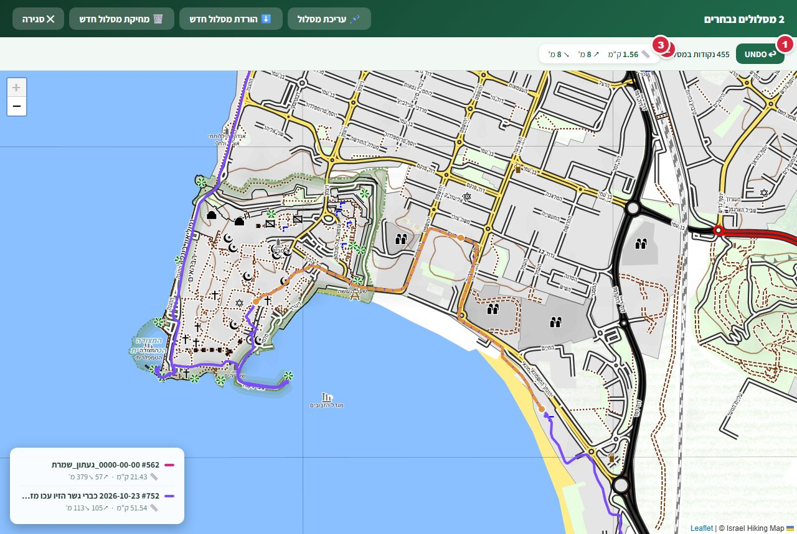
| # | כפתור / שדה | מה הוא עושה |
|---|---|---|
| 1 | ↩ UNDO | מבטל את הנקודה האחרונה שהוספתם. אפשר ללחוץ שוב ושוב. |
| 2 | הודעת מצב | כמה נקודות יש במסלול, או מה לעשות עכשיו. אם הלחיצה לא הייתה קרובה מספיק לקו, תופיע כאן הודעה עם ⚠. |
| 3 | 📏 ↗ ↘ | המרחק, הטיפוס והירידה של המסלול החדש, מתעדכנים בכל לחיצה. |
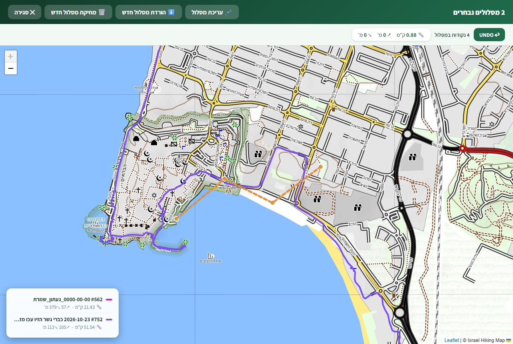
לבנות מסלול חדש מחלקים של מסלולים קיימים
- בוחרים בקטלוג את המסלולים שעוברים באזור ולוחצים 🗺️ הצג על מפה.
- 🖊️ עריכת מסלול ← ✂️ חיתוך מקטע.
- לוחצים על נקודת ההתחלה על אחד הקווים. כשהעכבר קרוב מספיק לקו, הסמן הופך לאצבע.
- ממשיכים ללחוץ לאורך הדרך הרצויה. בצומת אפשר לעבור לקו של מסלול אחר.
- טעיתם? ↩ UNDO.
- בודקים את המרחק והטיפוס בפס, ולוחצים ⬇️ הורדת מסלול חדש.
🕸️ רשת מסלולים: אילו מסלולים עוברים בנקודה
בקטלוג יש קבצים ששמם מתחיל ב-"רשת_מסלולים". כל אחד מהם מאחד את כל המסלולים שעברו באזור מסוים, למשל נהריה–עכו–כברי, לקובץ אחד. זו דרך טובה לראות את כל השבילים באזור.
למצוא את המסלולים המקוריים של קטע ברשת
- מציגים על המפה קובץ רשת.
- מקרבים את המפה ולוחצים בדיוק על קו של הרשת (הסמן הופך לאצבע).
- מתחת לקורדינטות מופיעה הרשימה "מסלולים שעוברים בנקודה", עם מספר, שם, תאריך והמרחק מהנקודה של כל מסלול.
- לחיצה על ➕ ליד מסלול מוסיפה אותו למפה בצבע משלו (הסימן הופך ל-✓). מסלול שכבר מוצג על המפה מסומן ב-✓ מראש.
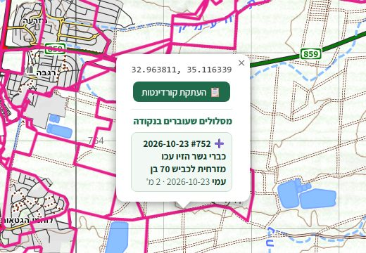
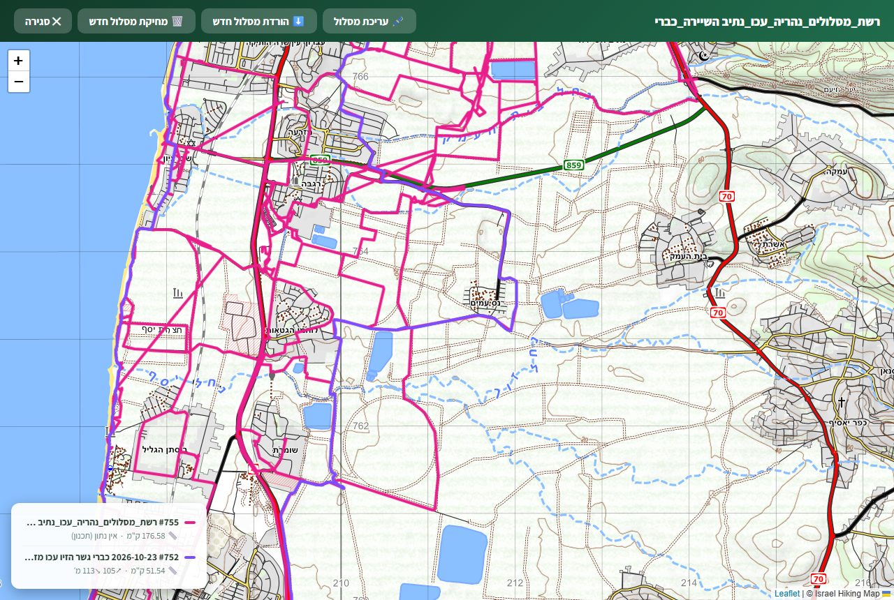
🔎 עריכת מסלול חדש (קובץ מהמחשב)
בדף הזה עובדים עם קובצי GPX שלכם, כאלה שלא נמצאים בקטלוג: מהשעון, מאפליקציה או מחבר. נכנסים אליו מכפתור 🔎 בדיקת קובץ חדש בקטלוג.
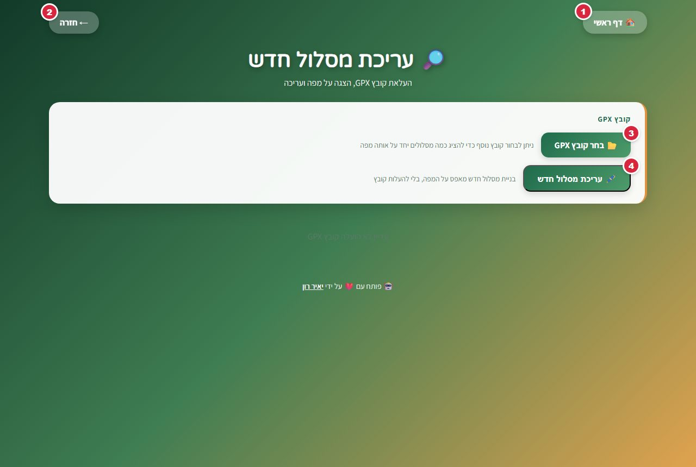
| # | כפתור | מה הוא עושה |
|---|---|---|
| 1 | 🏠 דף ראשי | חזרה לקטלוג המסלולים. |
| 2 | ← חזרה | חזרה לדף הקודם בדפדפן. |
| 3 | 📂 בחר קובץ GPX | פותח קובץ GPX מהמחשב או מהטלפון ומציג אותו על המפה. אפשר לבחור שוב קובץ נוסף, וכל המסלולים יוצגו יחד. |
| 4 | 🖊️ עריכת מסלול חדש | מתחיל מסלול חדש מאפס, בלי קובץ. המפה נפתחת במיקום שלכם (אם תאשרו לדפדפן לגשת למיקום), ותפריט העריכה נפתח מיד. |
אחרי שנבחר קובץ
לכל קובץ מופיע כרטיס עם השם, הצבע שלו על המפה, המרחק והטיפוס והירידה. מתחת לכרטיסים יש שורת כפתורים, ומתחתיה המפה.
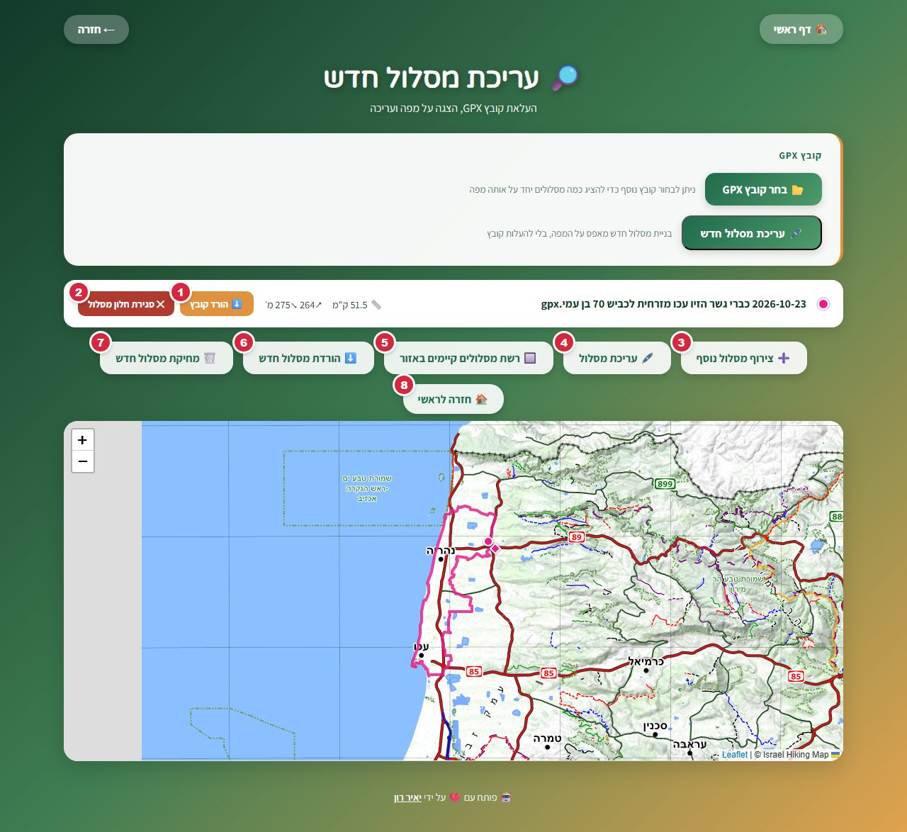
| # | כפתור | מה הוא עושה |
|---|---|---|
| 1 | ⬇️ הורד קובץ | מוריד את הקובץ הזה כפי שהוא. |
| 2 | ✕ סגירת חלון מסלול | מסיר את הקובץ מהמפה ומהרשימה. הקובץ במחשב לא נמחק. |
| 3 | ➕ צירוף מסלול נוסף | בוחר קובץ GPX נוסף ומציג אותו יחד עם הקודמים. |
| 4 | 🖊️ עריכת מסלול | פותח את תפריט העריכה. ראו עריכה בדף הזה. |
| 5 | 🔲 רשת מסלולים קיימים באזור | בוחרים אזור על המפה ומקבלים את כל מסלולי הקטלוג שעוברים בו. ראו רשת מסלולים באזור. |
| 6 | ⬇️ הורדת מסלול חדש | מוריד את המסלול שבניתם בעריכה כ-מסלול_חדש.gpx, ומנקה אותו מהמפה. |
| 7 | 🗑️ מחיקת מסלול חדש | מוחק את המסלול שבניתם כדי להתחיל מחדש. |
| 8 | 🏠 חזרה לראשי | חזרה לקטלוג המסלולים. |
קורדינטות של נקודה
- לחיצה שמאלית על המפה, כשלא נמצאים במצב עריכה או בחירת אזור, פותחת חלונית עם הקורדינטות וכפתור 📋 העתקת קורדינטות.
- לחיצה ימנית (בטלפון: לחיצה ארוכה) פותחת את אותה חלונית תמיד, גם באמצע ציור מסלול או בחירת אזור, בלי להוסיף נקודה.
🖊️ עריכה בדף "עריכת מסלול חדש"
הכפתור 🖊️ עריכת מסלול פותח תפריט שבעזרתו בונים מסלול חדש מתוך הקבצים שפתחתם או מתוך שבילי המפה.
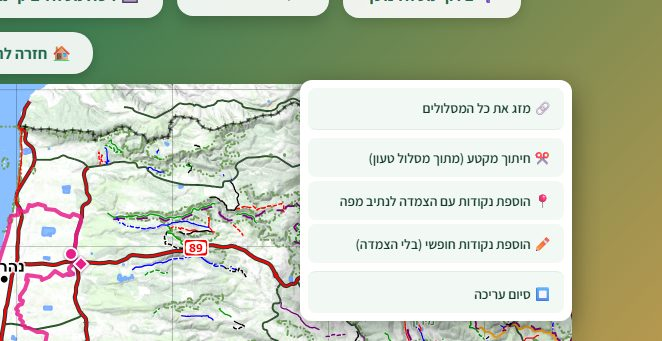
| אפשרות | מה היא עושה | |
|---|---|---|
| 🔗 | מזג את כל המסלולים | מוריד מיד קובץ אחד, מיזוג_מסלולים.gpx, עם כל הקבצים שפתחתם. מופיע רק כשיש לפחות קובץ אחד פתוח. |
| ✂️ | חיתוך מקטע (מתוך מסלול טעון) | לוחצים על נקודות לאורך הקבצים שפתחתם, והמסלול החדש עוקב אחרי הקו ביניהן. מופיע רק כשיש קובץ פתוח. |
| 📍 | הוספת נקודות עם הצמדה לנתיב מפה | הנקודות נצמדות לשבילים ולדרכים של המפה (OpenStreetMap), והמסלול עוקב אחריהם. צריך להתקרב לאזור לפני הבחירה. |
| ✏️ | הוספת נקודות חופשי (בלי הצמדה) | כל לחיצה מוסיפה נקודה במקום שלחצתם, עם קו ישר מהנקודה הקודמת. |
| ⏹️ | סיום עריכה | מפסיק להוסיף נקודות. המסלול שבניתם נשאר, ואפשר עדיין להוריד אותו או לבטל נקודות. |
בזמן עריכה מופיע מתחת למפה פס עם ↩ UNDO (ביטול הנקודה האחרונה), הודעת מצב, ו-📏 ↗ ↘ (מרחק, טיפוס וירידה של המסלול החדש), בדיוק כמו בקטלוג.
לצייר מסלול חדש מאפס, לפי השבילים במפה
- לוחצים 🖊️ עריכת מסלול חדש בראש הדף.
- מזיזים ומקרבים את המפה לאזור הרצוי.
- בתפריט: 📍 הוספת נקודות עם הצמדה לנתיב מפה. ייתכן שיעברו כמה שניות עד שהשבילים ייטענו.
- לוחצים על נקודת ההתחלה ואחר כך על נקודות לאורך הדרך. המסלול נצמד לשבילים.
- לקטע בלי שביל: פותחים את התפריט שוב, בוחרים ✏️ חופשי וממשיכים מאותה נקודה.
- ⬇️ הורדת מסלול חדש.
לקצר הקלטה שלכם (למשל להוריד את הנסיעה ברכב בסוף)
- 📂 בחר קובץ GPX ובוחרים את ההקלטה.
- 🖊️ עריכת מסלול ← ✂️ חיתוך מקטע.
- לוחצים על נקודת ההתחלה הרצויה ואחר כך על נקודת הסיום הרצויה. המסלול החדש עוקב אחרי ההקלטה ביניהן.
- ⬇️ הורדת מסלול חדש.
🔲 רשת מסלולים קיימים באזור
הכלי הזה אוסף את כל מסלולי הקטלוג שעוברים במלבן שאתם בוחרים, ומוריד אותם כקובץ GPX אחד. כך אפשר לראות, למשל באפליקציית ניווט, את כל השבילים שנרכבו באזור.
להוריד את כל המסלולים באזור
- מזיזים את המפה לאזור הרצוי ולוחצים 🔲 רשת מסלולים קיימים באזור.
- לוחצים על המפה בפינה אחת של האזור, ואחר כך בפינה הנגדית. בזמן הבחירה מצויר מלבן מקווקו והגודל שלו מוצג בק"מ.
- צלע המלבן יכולה להיות עד 20 ק"מ. מלבן גדול יותר נצבע אדום, ואז לוחצים על פינה נגדית קרובה יותר.
- הקווים של כל המסלולים באזור מופיעים על המפה, ומתחתיה פס עם הנתונים.
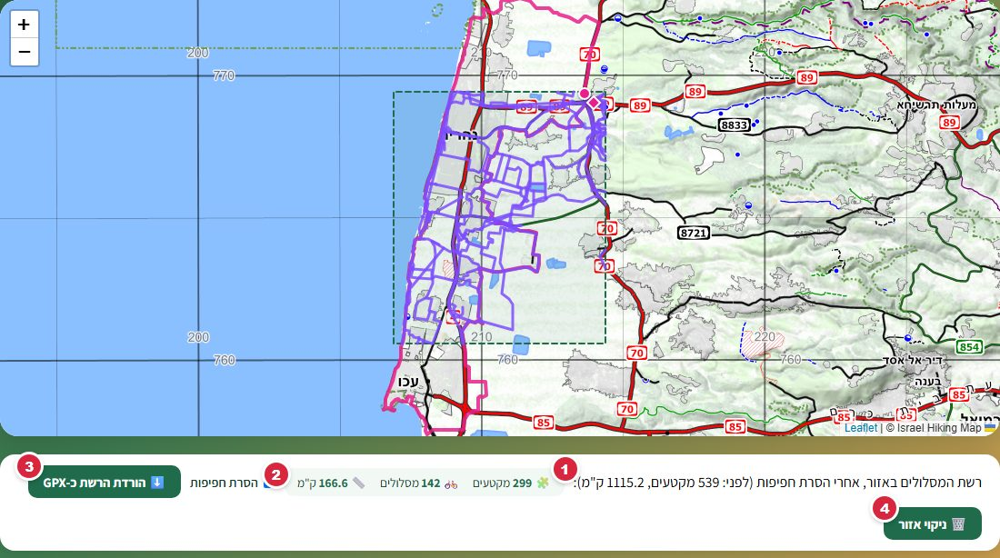
| # | כפתור / שדה | מה הוא עושה |
|---|---|---|
| 1 | 🧩 🚲 📏 | כמה קטעים יש ברשת, מכמה מסלולים מקוריים, והאורך הכולל בק"מ. |
| 2 | הסרת חפיפות | מסומן כברירת מחדל. באזור שרוכבים בו הרבה, אותו שביל מופיע עשרות פעמים. הסימון משאיר כל שביל פעם אחת בלבד, ולכן הקובץ קטן וברור יותר. בלי הסימון יורדים כל הקווים כמו שהם. |
| 3 | ⬇️ הורדת הרשת כ-GPX | מוריד את הרשת כקובץ אחד. כל קטע הוא קו נפרד בקובץ. |
| 4 | 🗑️ ניקוי אזור | מוחק את המלבן ואת הרשת מהמפה. |
🧹 ניקוי קובץ GPX
לפעמים ה-GPS "קופץ": נקודה בודדת רחוקה מהמסלול, קטע שנרשם כשהמכשיר נשאר דלוק ברכב, או גובה שגוי. הכלי הזה מתקן את הגובה, מסיר קפיצות, נותן לכם לסמן קטעים למחיקה, ומוריד קובץ נקי.
1. בחירת קובץ
יש שתי דרכים: מהקטלוג (בוחרים מסלול ולוחצים 🧹 ניקוי קובץ בפס הפעולות), או ישירות מהדף.
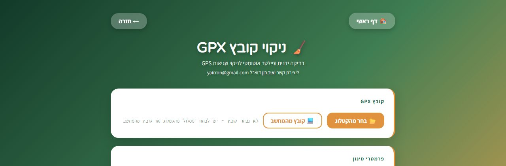
- 📂 בחר מהקטלוג: מעביר לקטלוג כדי לבחור מסלול.
- 💻 קובץ מהמחשב: פותח קובץ GPX שלכם. הוא נקרא בדפדפן בלבד ולא נשלח לאתר.
2. הגדרות
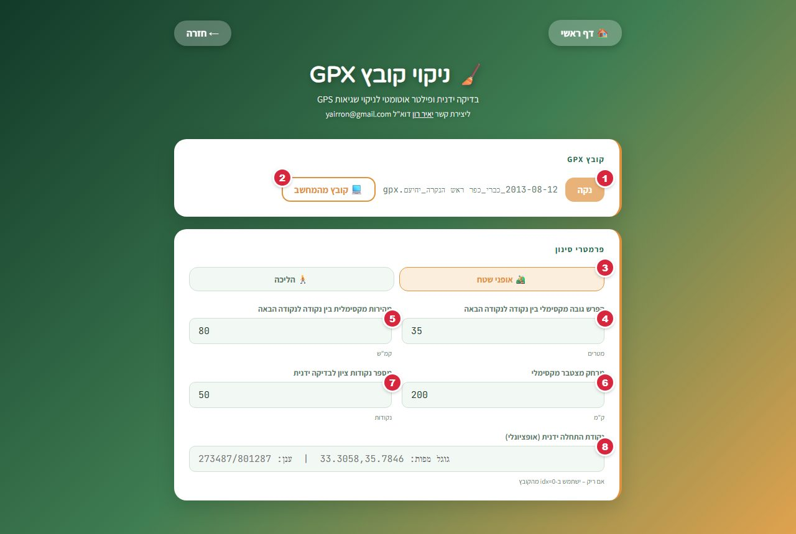
| # | כפתור / שדה | מה הוא עושה |
|---|---|---|
| 1 | נקה | מתחיל את הניקוי: מתקן גובה לפי מודל שטח, מסיר קפיצות GPS ברורות, ופותח את שלב הבדיקה הידנית. |
| 2 | 💻 קובץ מהמחשב | מחליף את הקובץ בקובץ אחר מהמחשב. |
| 3 | 🚵 אופני שטח / 🚶 הליכה | ממלא ערכים מומלצים בשלושת השדות הבאים. לאופניים: 35 מ', 80 קמ"ש, 200 ק"מ. להליכה: 15 מ', 30 קמ"ש, 60 ק"מ. |
| 4 | הפרש גובה מקסימלי | נקודה שהגובה שלה שונה מהנקודה הקודמת ביותר מזה תוסר. |
| 5 | מהירות מקסימלית | נקודה שכדי להגיע אליה צריך מהירות גבוהה מזו תוסר. זה מה שתופס "קפיצות" GPS. |
| 6 | מרחק מצטבר מקסימלי | הקובץ נחתך אחרי המרחק הזה. שימושי אם שכחתם לעצור את ההקלטה בסוף. |
| 7 | מספר נקודות ציון לבדיקה ידנית | לכמה נקודות ציון המסלול יחולק בשלב הבדיקה הידנית. ברירת המחדל 50. יותר נקודות מאפשרות לסמן קטעים קצרים יותר. |
| 8 | נקודת התחלה ידנית | לא חובה. אם תחילת ההקלטה שגויה (למשל ה-GPS עוד לא נקלט), כותבים כאן את נקודת ההתחלה האמיתית, בקורדינטות מגוגל מפות (33.3058,35.7846) או ברשת ישראל (273487/801287). |
3. בדיקה ידנית
המסלול מוצג על המפה עם נקודות ציון ממוספרות. מימין יש רשימה של כל נקודות הציון, עם השעה שבה עברתם בכל אחת. בראש המסך מופיע מספר הסבב, ומתחתיו פס כתום שמדווח כמה נקודות גובה תוקנו וכמה קפיצות הוסרו אוטומטית.
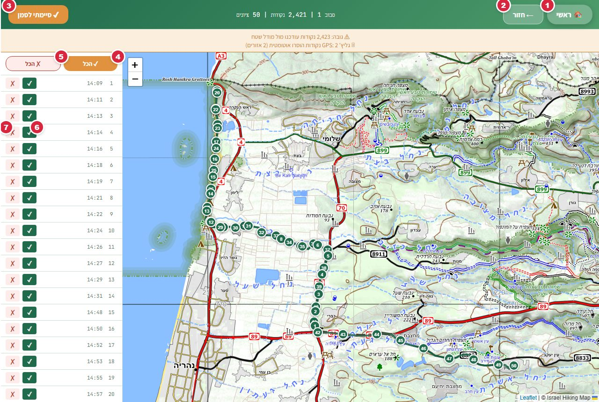
| # | כפתור | מה הוא עושה |
|---|---|---|
| 1 | 🏠 ראשי | חזרה לקטלוג (העבודה לא נשמרת). |
| 2 | ← חזור | חזרה למסך ההגדרות. משם אפשר לחזור לכאן עם ↩ חזור לעריכת נקודות. |
| 3 | ✔ סיימתי לסמן | מסיים את הסבב ופותח את חלון "מה הלאה?". |
| 4 | ✓ הכל | מסמן את כל נקודות הציון לשמירה. |
| 5 | ✗ הכל | מסמן את כל נקודות הציון למחיקה. שימושי כשרוב המסלול שגוי ורוצים לשמור רק כמה קטעים. |
| 6 | ✓ ליד נקודת ציון | שומר את הקטע שמתחיל בנקודה הזו (עד נקודת הציון הבאה). |
| 7 | ✗ ליד נקודת ציון | מוחק את הקטע שמתחיל בנקודה הזו. הקטע נצבע במפה בצבע אחר, כדי שתראו מה יימחק. נקודות ציון אחרות שנמצאות עד 50 מטר מהנקודה (למשל כשעברתם באותו מקום פעמיים) מסומנות יחד איתה. |
לחיצה על שורה ברשימה מקרבת את המפה לנקודת הציון הזו.
4. מה הלאה?
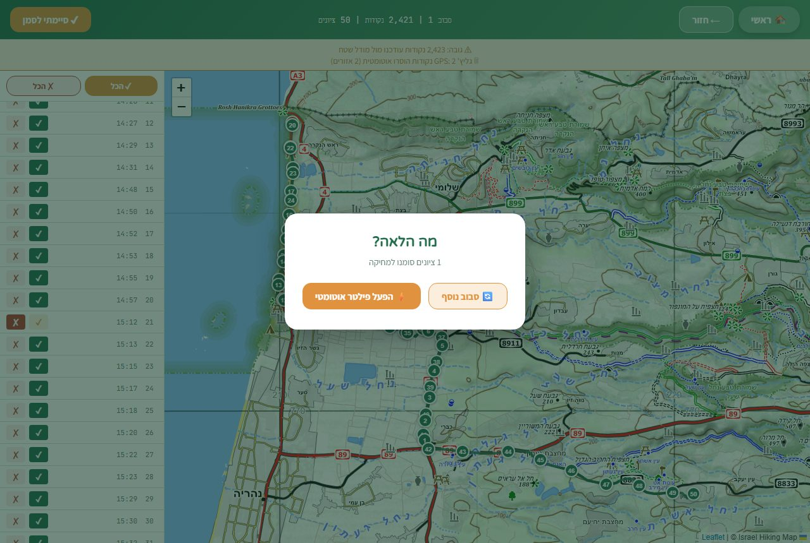
- 🔄 סבוב נוסף: מוחק את הקטעים שסימנתם ב-✗ ומחלק את מה שנשאר לנקודות ציון חדשות, לבדיקה מדויקת יותר. מספר הסבב בראש המסך עולה.
- ⚡ הפעל פילטר אוטומטי: מוחק את הקטעים שסימנתם, מפעיל את הסינון לפי ההגדרות (גובה, מהירות, מרחק) ומציג תוצאות.
5. תוצאות
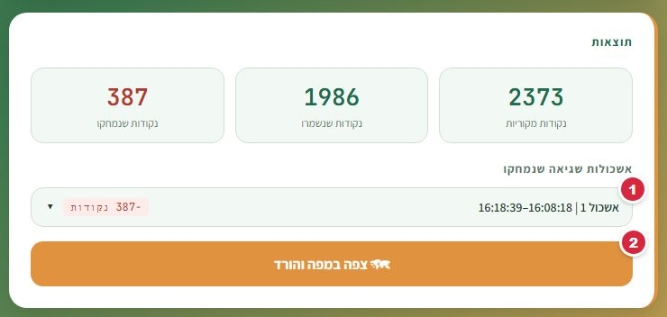
| # | כפתור / אזור | מה הוא עושה |
|---|---|---|
| 1 | אשכולות שגיאה | כל אשכול הוא קבוצת נקודות שנמחקו ברצף, עם טווח השעות ומספר הנקודות. לחיצה על אשכול פותחת פירוט של כל נקודה וסיבת המחיקה שלה (מהירות, גובה או מרחק). |
| 2 | 🗺 צפה במפה והורד | מציג את המסלול הנקי על המפה, לפני ההורדה. |
6. מפה והורדה
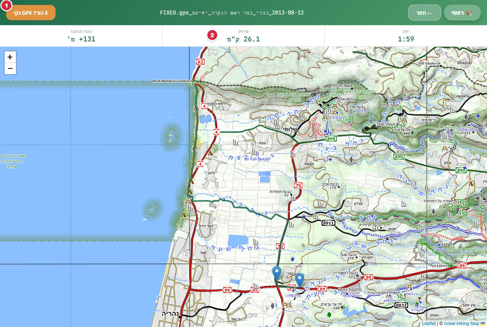
| # | כפתור / שדה | מה הוא עושה |
|---|---|---|
| 1 | ⬇ הורד GPX נקי | מוריד את הקובץ הנקי. שמו הוא שם הקובץ המקורי עם התוספת _FIXED. |
| 2 | זמן · מרחק · גובה מצטבר | הנתונים של המסלול אחרי הניקוי. |
← חזור מחזיר למסך התוצאות, ו-🏠 ראשי לקטלוג.
➕ הוספת מסלול לקטלוג
רכבתם או הלכתם במסלול שלא נמצא בקטלוג? אפשר לשלוח אותו בטופס. המסלול נשלח במייל למנהל האתר, נבדק, ומתווסף לקטלוג עם ההערות ומקומות העניין שכתבתם. נכנסים לטופס מכפתור ➕ הוספת מסלול לקטלוג בראש הקטלוג.
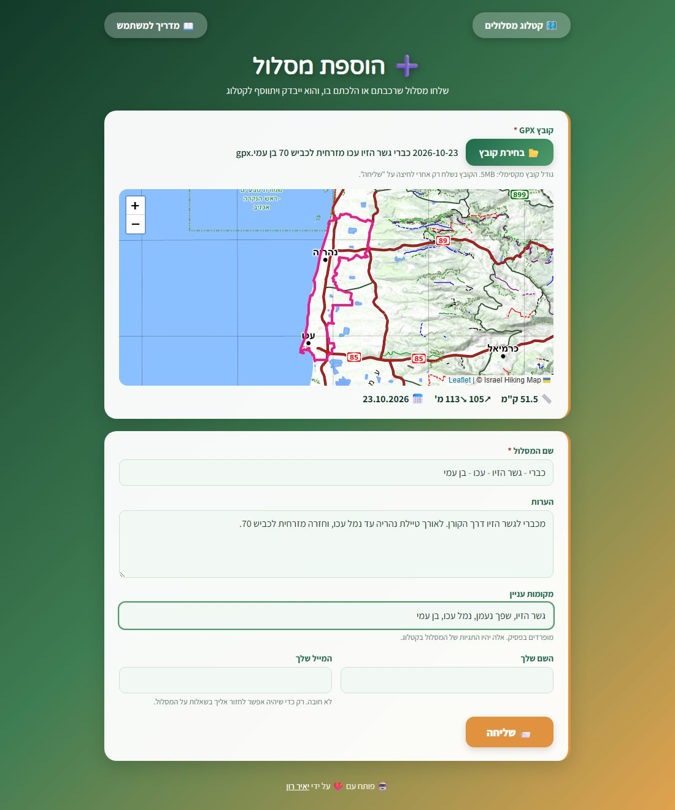
לשלוח מסלול
- 📂 בחירת קובץ: בוחרים את קובץ ה-GPX. גודל קובץ מקסימלי: 5MB.
- המסלול מוצג על מפה עם המרחק, הטיפוס והירידה ותאריך ההקלטה. בודקים שזה הקובץ הנכון.
- אם מופיעה אזהרה 🚗 על נסיעה ברכב, כדאי לחתוך אותה קודם בדף עריכת מסלול חדש (✂️ חיתוך מקטע) ולשלוח את הקובץ החתוך. אפשר גם לשלוח כמו שהוא.
- שם המסלול (חובה): מתמלא אוטומטית משם הקובץ, ואפשר לשנות.
- הערות: מאיפה לאן, דרך איפה, מצב השבילים ודברים שכדאי לדעת.
- מקומות עניין: מופרדים בפסיק, למשל
גשר הזיו, שפך נעמן. הם יהיו התגיות של המסלול בקטלוג. - השם והמייל שלכם: לא חובה, רק כדי שיהיה אפשר לחזור אליכם בשאלות.
- 📨 שליחה. בסיום מופיעה הודעה "✅ המסלול נשלח".
💬 טיפים ושאלות נפוצות
איך טוענים קובץ GPX לאפליקציה או לשעון?
מורידים את הקובץ (📥 הורדת קובץ GPX בכרטיס המסלול) ופותחים אותו באפליקציה: ברוב אפליקציות הניווט יש "ייבוא" או "פתיחת קובץ". בטלפון אפשר בדרך כלל ללחוץ על הקובץ שירד ולבחור את האפליקציה.
מה ההבדל בין "הקלטה" ל"תכנון"?
הקלטה היא מסלול שמישהו רכב או הלך בפועל, עם שעה לכל נקודה. תכנון הוא מסלול שצויר מראש. במסלול מתוכנן אין זמנים, ולפעמים גם אין נתוני גובה.
הסמן לא הופך לאצבע כשאני מנסה לחתוך מקטע
צריך ללחוץ קרוב לקו של מסלול שמוצג על המפה. מקרבים את המפה (זום) ומנסים שוב. בהצמדה לנתיב מפה (📍) הסמן הופך לאצבע ליד כל שביל או דרך במפה.
"השטח המוצג במפה גדול מדי לשליפת נתיבים"
ההצמדה לשבילי המפה טוענת את השבילים של השטח שמוצג כרגע. מקרבים את המפה לאזור קטן יותר ובוחרים שוב 📍.
האם האתר עובד בטלפון?
כן. בטלפון לחיצה ארוכה מחליפה את הלחיצה הימנית, ואפשר להגדיל צילומי מסך ומפות עם שתי אצבעות.
על איזו מפה מוצגים המסלולים?
על מפת הטיולים של Israel Hiking Map, שמציגה סימוני שבילים, מעיינות, אתרים וקווי גובה.
יש לי שאלה או הערה
כתבו ליאיר רון.